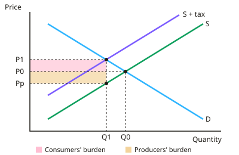

A-level Economics Year 12 · Topic 7
Government intervention in markets
This topic evaluates the tools governments use to correct market failure.
We will look at taxes and subsidies, price controls, buffer stocks, carbon taxes and permits, information, nudges and direct provision.
Then we cover nationalisation, privatisation, regulation and competition policy, and see how intervention itself can fail.
- 7 subtopics
- 194 questions
- Free: 7.1 notes and 10 questions
In this topic
- 7.1Indirect taxes and subsidies: effects, incidence and evaluationFree below · 27 questions
- 7.2Maximum and minimum price controlsOpen in Full Marks · 24 questions
- 7.3Buffer stocks and stabilising commodity pricesOpen in Full Marks · 27 questions
- 7.4Tradable pollution permits, carbon taxes and regulationOpen in Full Marks · 25 questions
- 7.5Provision of information, nudges and direct provision of goods and servicesOpen in Full Marks · 34 questions
- 7.6Nationalisation, privatisation, regulation and competition policyOpen in Full Marks · 31 questions
- 7.7Government failureOpen in Full Marks · 26 questions
7.1 · Free notes
Indirect taxes and subsidies: effects, incidence and evaluation

Key points
- An indirect tax is a tax on spending (e.g. VAT, excise duties on alcohol, tobacco and fuel) collected from suppliers. It shifts the supply curve left/upward by the tax, raising the market price and reducing equilibrium quantity.
- A specific tax is a fixed £ amount per unit and causes a parallel shift of supply. An ad valorem tax is a percentage of the price, so the supply curve pivots and the vertical gap widens at higher prices.
- Tax incidence is who bears the burden. Consumer burden per unit = new price − old price. Producer burden per unit = tax − price rise. Tax revenue = tax per unit × quantity sold after the tax.
- Incidence depends on elasticities: the more price inelastic demand (PED) is relative to supply, the more consumers pay. The more inelastic supply (PES) is relative to demand, the more producers pay. If supply is perfectly elastic, consumers bear the whole tax.
- Governments tax goods with inelastic demand (tobacco, fuel) to raise revenue, but consumption falls only slightly. Taxing goods with elastic demand cuts quantity more but raises less revenue.
- Taxes on demerit goods or negative externalities aim to internalise the externality. The ideal (Pigouvian) tax equals the marginal external cost, moving output towards the social optimum. A tax where there is no externality creates deadweight (welfare) loss.
- A subsidy is a payment per unit to producers (or consumers). It shifts supply right/down, lowers the market price by less than the subsidy and raises quantity. Cost to government = subsidy per unit × quantity after the subsidy.
- Subsidy benefit is shared: consumers gain from the lower price paid, and producers gain because price received = market price + subsidy. The more inelastic demand, the more of the subsidy passes to consumers.
- Subsidies are used for merit goods and positive externalities (rail travel, renewable energy, education) and to support infant industries. They are justified where social benefit exceeds private benefit.
- Evaluating taxes: they are often regressive, can cause cost-push inflation, evasion and black markets, and the external cost is hard to value. Elasticity values, time lags and effects on competitiveness all matter. Revenue can fund other policies (a double dividend).
- Evaluating subsidies: the opportunity cost of public funds, risk of government failure (poor information, lobbying), and dependency or inefficiency among firms. Producers may not pass the subsidy on, and it is politically hard to withdraw.
In more detail
- Worked incidence: a £2 per unit tax raises the price from £10.00 to £11.50 → consumers pay £1.50 (75%) and producers £0.50 (25%), because demand is less elastic than supply.
- Worked tax revenue: after the tax 800 units are sold → revenue = £2 × 800 = £1,600.
- Worked subsidy: a £3 per unit subsidy with 1,200 units sold costs the government £3,600. If the price falls from £10 to £8, consumers gain £2 per unit and producers keep £1.
- Ad valorem tax: VAT at 20% is a percentage tax, so the supply curve pivots rather than shifting in parallel, because the tax per unit is bigger at higher prices.
Practice
Indirect taxes and subsidies: effects, incidence and evaluation: 10 questions
Pick an answer to check it, or open the answer for the explanation.
1. A per-unit tax of £2 raises the market price of a good from £10 to £11.20. How much of the tax per unit is borne by consumers?
- £0.80
- £1.20
- £2.00
- £11.20
Show answer
B: £1.20. Consumers' burden per unit = new price − old price = £1.20. Producers bear the remainder, £2.00 − £1.20 = £0.80.
2. An indirect tax will fall mainly on consumers when demand is:
- inelastic and supply is elastic
- unit elastic and supply is perfectly inelastic
- elastic and supply is inelastic
- perfectly elastic and supply is elastic
Show answer
A: inelastic and supply is elastic. Consumers bear most of the tax when demand is inelastic (they keep buying) and supply is elastic (producers can cut output). The other options place most of the burden on producers.
3. A 50p per unit tax cuts sales from 1,000 to 800 units. What is the government's tax revenue?
- £400
- £800
- £100
- £500
Show answer
A: £400. Tax revenue = tax per unit × quantity sold after the tax = £0.50 × 800 = £400.
4. A £3 per unit subsidy lowers the price from £12 to £10 and raises sales from 400 to 500 units. What is the cost to the government?
- £300
- £1,000
- £1,500
- £1,200
Show answer
C: £1,500. Cost = subsidy per unit × quantity after the subsidy = £3 × 500 = £1,500. Using 400 units, or the £2 price fall, gives the wrong answer.
5. Which of the following is an ad valorem tax?
- A £13 per passenger air departure charge
- VAT charged at 20% of the selling price
- A duty of £2.50 on each bottle of spirits
- A 40p per litre fuel duty
Show answer
B: VAT charged at 20% of the selling price. An ad valorem tax is a percentage of the price, like VAT at 20%. The others are fixed amounts per unit, i.e. specific taxes.
6. Demand for cigarettes is highly price inelastic. Raising the indirect tax on them is therefore most likely to:
- leave the price unchanged as producers absorb it
- raise revenue but increase consumption
- cut consumption sharply and raise little revenue
- raise large revenue but cut consumption only slightly
Show answer
D: raise large revenue but cut consumption only slightly. With inelastic demand, quantity falls proportionately less than price rises, so revenue rises and consumption falls only slightly. Consumers bear most of the burden.
7. How does an ad valorem tax differ graphically from a specific tax?
- Demand shifts left in parallel
- Supply pivots upwards, the vertical gap widening at higher prices
- Supply shifts in parallel by a fixed amount
- Supply shifts right as price rises
Show answer
B: Supply pivots upwards, the vertical gap widening at higher prices. Because the tax is a percentage of price, the vertical distance between the old and new supply curves grows as price rises, so the curve pivots. A specific tax gives a parallel shift.
8. Which is a valid criticism of using an indirect tax to correct a negative externality?
- The external cost is hard to value, so the tax may be set wrongly
- It shifts the demand curve to the right
- It cannot change the market price
- It always reduces government revenue
Show answer
A: The external cost is hard to value, so the tax may be set wrongly. The tax should equal the marginal external cost, which is hard to measure in money terms. A wrongly set tax can under- or over-correct, causing welfare loss.
9. A £1 per unit tax is imposed where supply is perfectly elastic and demand slopes downward. The price paid by consumers rises by:
- £0
- £1
- less than £0.50
- £0.50
Show answer
B: £1. Producers will supply only at the original price plus the tax, so the whole £1 passes to consumers. With perfectly elastic supply producers bear none of it.
10. A government subsidises rail travel. The strongest economic justification is that it:
- raises the market price of rail travel
- lowers government spending
- helps internalise positive externalities like less congestion
- moves output away from the social optimum
Show answer
C: helps internalise positive externalities like less congestion. Rail travel generates external benefits (less road congestion and pollution). A subsidy raises output towards the socially optimal level.
Keep going in Full Marks
Full Marks has 27 questions on Indirect taxes and subsidies: effects, incidence and evaluation (17 more than here), set out in practice levels. You also get notes and 3D models for all 7 subtopics of Government intervention in markets, plus games, timed exams and past papers.